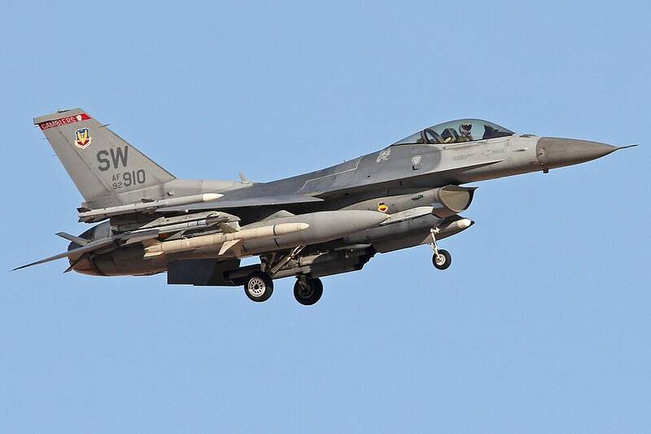

Shaw AFB
South Carolina

F-16 base and Air Forces Central headquarters. 1
Open in the interactive Watcher
Sources
- Shaw Air Force Base Wikipedia
South Carolina

F-16 base and Air Forces Central headquarters. 1
Open in the interactive Watcher